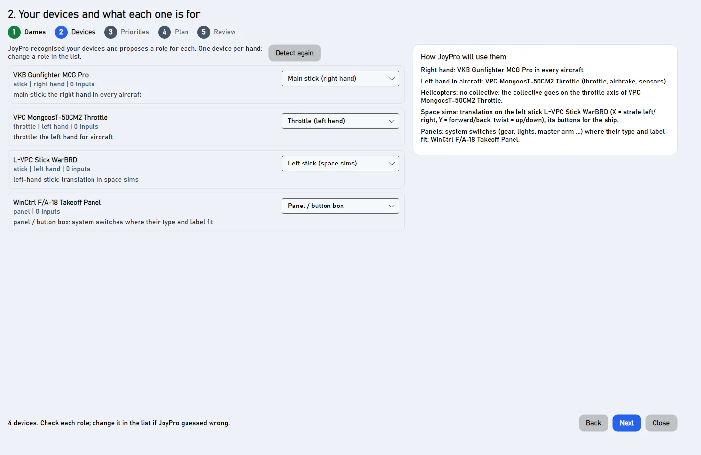

#はい – ヘッドトラッキング、フェイストラッキング、Tobii、VRを使っている、または使う予定です（HOTASに視点ボタンなし）
オプション説明済み2 ×頭を動かして周りを見る場合に選びます。
ステップ3とクイック設定（フライトシム向け）：ヘッドトラッキング、Tobii アイトラッカー、VR で周りを見る場合や、導入する予定がある場合に選びます。
プランは HOTAS に視点や見回し用のボタンを置かず、視点をリセットするボタンだけを置きます。ボタンをほかの機能に使えます。
セットアップ ウィザードは、ゲームの操作を一度に設定します。接続中のデバイスを調べ、それぞれに役割（メイン スティック、スロットル、ペダル、パネルなど）を与え、ゲームの機体の重要な機能のリレーションを作り、デバイスに割り当て、結果をチートシートで見せます。プロファイルが変わる前にすべてを確認でき、1 回の 元に戻す ですべて取り消せます。AI は使いません。同じ選択をすれば、いつも同じ計画になります。
スタート ページから開きます。「デバイスをセットアップ」カードに 2 つのボタンがあります：
このカードがない場合（すべてのゲームが設定済み）は、スタート ページの 所有ゲーム の下か、割り当てページにある デバイスを自動設定... を押します。


クイック設定（すべて自動で設定）は、これらのステップなしで同じプランナーを実行します。デバイスの通常の役割を使い、すべての機体を同等に扱い、モディファイアは使わず、機能をどこに置きますか？ の前回の選択を使います。フライトシムでは質問を1つだけします：ヘッドトラッキングまたはVRを使いますか？
手順は上部に表示されます。下の 戻る と 次へ で手順を移動します。ウィンドウはいつでも閉じられます。適用 の前に閉じたウィザードは、閉じたときの状態で戻ってきます。


スタート ページで監視しているゲームにはチェックが入っています。このセットアップで扱うゲームにチェックを入れます。これで JoyPro が監視するゲームは変わりません。
JoyPro はスティック、スロットル、ペダル、パネルを認識し、それぞれに役割を提案します：「このデバイスの用途」。役割はその一覧で変えられます。片手に 1 つのデバイス：同じ手用の 2 本目のスティックは、別の選択をしない限り「未使用」になります。複数のグリップを付けられるベースでは、グリップを尋ねます。右のボックスに、JoyPro がそれらをどう使うかが文章で表示されます。再検出 でデバイスを読み直します（先にデバイスを接続してください）。


JoyPro が計画を作ります：配置した機能の数、配置できなかったもの、作ったモディファイア、従ったルール、機体ごとの品質スコア（100 % = すべての機能が最適な場所にある）。


デバイス と 機体 を選ぶと、JoyPro によるデバイスの図に、どこに何が割り当てられたかが表示されます。一覧で機能を選ぶと、空いている入力に移したり、ほかの機能と入れ替えたり、計画から外したりできます。未配置 には収まらなかったものが重要な順に表示されます。
気に入ったら、プロファイルに適用 を押し、続いて ゲームにエクスポート を押します（エクスポート ページが開きます）。ゲームが変わるのはエクスポートのときだけです。
エクスポートするまでは何も変わりません。適用 とエクスポートの後、各ゲームの操作設定ファイルにはウィザードの割り当てが入ります。DCS では、スライダーが 全機体で同じ役目は同じボタン の近くにあれば、選んだすべての機体で同じ機能が同じボタンになります。Star Citizen では、船の操作がスティックに、横移動の軸が左のスティックに入ります。パネルには、ラベルに書かれたシステムが入ります。ゲームで以前の割り当てをデバイスから消したい場合は、自分のデバイスで置き換え でエクスポートしてください。
ウィンドウは Views/SetupWizardWindow.axaml、ビューモデルは ViewModels/SetupWizardViewModel.cs（専用のビューモデルで、MainWindowViewModel.SetupWizard.cs が監視中のゲームを渡して作成します）、プランナーは engine/SetupWizard/*.cs です。どの手順もエンジンのコマンドなので、CLI でも同じプランが作れます：engine setup devices（認識と役割、--role、--grip）、engine setup aircraft（優先リスト）、engine setup plan（--games、--priorities "A>B|C"、--modifiers、--prefer-fewer または --use-all-modifiers、--placement（旧名 --realism）、--phase-layers、engine cockpits のコックピット情報を --cockpit-file として。プランの JSON を書き出します）、engine setup render（デバイスごとのコールアウトシート）、engine setup apply（--plan、プロファイルのバージョン 1 つ）。移動、入れ替え、削除、元に戻す操作は GUI でプランを編集し（SetupPlanEdit）、適用の前にもう一度チェックされます。リファレンス：セットアップウィザード。
このページの元になった機能ドキュメント（リポジトリから生成）：
プログラムのソースから読み取った 30 個のコントロール：説明済み 30、ソースの情報（ツールチップ、コード コメント、エンジン呼び出し）付き 0、今後拡充 0。
頭を動かして周りを見る場合に選びます。
ステップ3とクイック設定（フライトシム向け）：ヘッドトラッキング、Tobii アイトラッカー、VR で周りを見る場合や、導入する予定がある場合に選びます。
プランは HOTAS に視点や見回し用のボタンを置かず、視点をリセットするボタンだけを置きます。ボタンをほかの機能に使えます。
スティックのハットで周りを見る場合に選びます。
ステップ3とクイック設定（フライトシム向け）：スティックやスロットルで周りを見る場合に選びます。
プランは周りを見る操作を高い優先度でハットまたは親指スティックに置きます。順番は機銃、兵装リリース、カウンターメジャー、ブレーキ、トリム、ターゲットのすぐ後です。
ツールチップ このウィンドウを閉じます。ゲームを起動してください。コントローラーはそのまま使えます。
ウィンドウを閉じるよ。コントローラーはもう使えるよ。さあ、遊ぼう！
クイック セットアップのみ、Xbox コントローラーが唯一のデバイスで、どのゲームもそれを読み取る場合: 「閉じてプレイ」はウィンドウを閉じます。
コントローラーはそのままでゲームで使えます。何も設定されず、ドライバーもインストールされません。
ツールチップ プレイには不要です。仮のコントローラーを通して、ほかのボタンと柔らかいスティックの操作感を使えます。小さな追加ドライバーが必要です。
やりたい人だけでいいよ。コントローラーにほかのボタンをつけるよ。遊ぶのには要らないよ。
クイック セットアップのみ、「閉じてプレイ」の横: 「操作感を良くする」は、それでもコントローラーを設定します。仮のコントローラーを通して、ほかのボタンとスティックのカーブを使えます。
プレイには不要です。
ツールチップ ゲームとデバイスをもう一度探して、最初からやり直します
最初からもう一度試します。
「再試行」はクイック セットアップをもう一度実行します。JoyPro がゲームとデバイスを再び探し、確認画面に進みます。
先に上の行に書かれている問題を解決してください。例: スティックを接続する、ゲームを一度起動する。
ツールチップ すべてのステップを含むセットアップを開き、各ステップを自分で選べるようにします
ツールチップ 優先度リストの最後に新しい行を追加します
ツールチップ 選択した行に追加: その行の機体と同じ優先度になります
手順 3: 選んだ機体を優先順位リストの選択中の行に入れるので、その行にすでにある機体と同じ扱いになります。
手順 3: 選択中の行を 1 つ下に移動します。
ツールチップ 選択した機体を下の独自の行に分けます
手順 3、デフォルトはオン: JoyPro は、最も重要な機能に対してデバイスのボタンが足りない場合だけ、選んだ数を上限にモディファイアを追加し、そのことを知らせます。
オフ: 許可したすべてのモディファイアを使います。
スティックの画像を大きく表示します。
手順 5: 選んだデバイスと機体について表示されているチートシートを、画像ビューアーで原寸で開きます。印刷してシミュレーターの横に置けます。
このファイルは確認画面の JoyPro の図です。プロファイルは何も変わりません。
ボタンを移動または削除するツールを表示します。
クイック セットアップのみ: 「一部を変更」は、プランを変更するツール、各機能がその場所にある理由、収まらなかったものを表示します。
もう一度押すと非表示になります。
手順 5: 外した機能を、元の場所でプランに戻します。
前の手順に移動します。選択はそのまま残ります。選択を変更すると、手順 4 で新しいプランが作られます。
次の手順に進み、そのエンジン コマンドを実行します。デバイスの検出、機体の読み取り、プランの作成、シートの描画です。
ゲームに 1 つもチェックがないか、役割のあるデバイスがない場合は、ヒントを表示して進みません。
ツールチップ JoyPro がチェックした機体のボタンを設定します
JoyPro が、チェックした飛行機を設定するよ。
DCS World のクイック セットアップ: 「どの機体を操縦しますか？」のあと、「次へ」はチェックした機体のボタンだけを設定し、確認を表示します。
確認で「戻る」を押すと、質問がもう一度表示されます。
ツールチップ スティックとスロットルを各操作部の機能と共に、ゲームと機体ごとに表示します
各ボタンの役割と一緒にスティックを表示します。
手順 5: 「何がどこに?」は、このプランでレイアウト ウィンドウを開きます。何かが変わる前に、選んだゲームと機体について、すべてのデバイスと各操作部の機能を表示します。
これらのボタンを JoyPro に取り込みます。ゲームはまだ変わりません。
手順 5: プランのリレーション、割り当て、モディファイアを 1 回の操作でプロファイルに書き込みます。プロファイルの履歴の 1 つのバージョンになり、1 回の「元に戻す」ですべて取り消せます。
プランは先に確認され、問題があればヒントを表示して停止します。
ボタンをゲームに送ります。
「適用」の後: 「エクスポート」ページを開きます。そこでいつもどおりゲームにエクスポートします。
ゲーム内: ウィザードの割り当ては、そのエクスポートで反映されます。
このウィンドウを閉じます。
ウィザードのウィンドウを閉じます。「適用」の前なら何も変わっておらず、次に開いたときにウィザードは閉じたときの状態で戻ってきます。「適用」の後は、次のウィザードは最初から始まります。